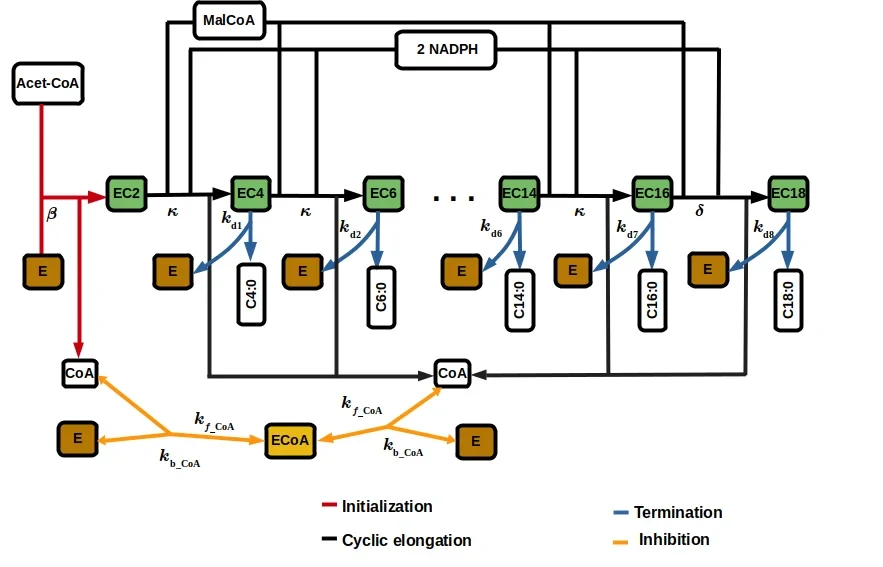
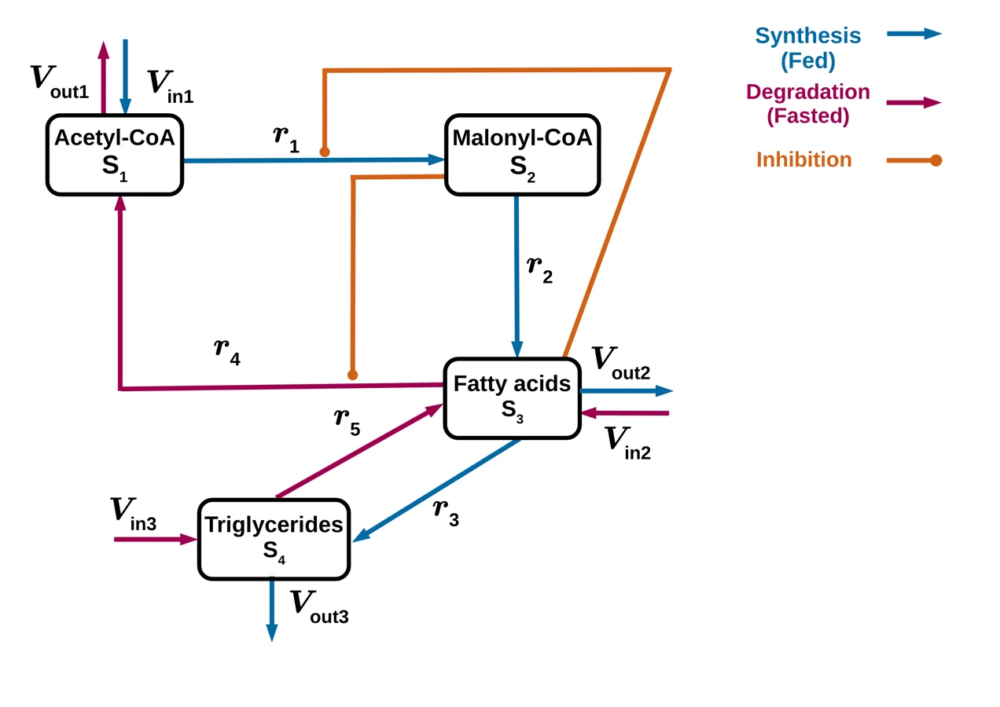

PhD research · metabolic systems biology
Fatty-acid metabolism and de novo synthesis
Dynamic computational modeling of hepatic lipid regulation
A two-layer PhD modeling project: qualitative fatty-acid metabolic switching through steady states and bistability, plus a semi-mechanistic FADNS elongation model fitted to fatty-acid time-course data.

Project ownership
| Lead contributor / project owner | Chilperic Armel Foko Kuate. |
| PhD supervision | Prof. Dr. Oliver Ebenhöh, Dr. Adélaïde Raguin and Prof. Dr. Barbara Bakker. |
| Main contributions by Chilperic | Designed and developed the fatty-acid metabolism modeling framework; built the coarse-grained ODE model; derived conditions for multiple steady states and bistability; developed the semi-mechanistic FADNS elongation model; reduced biochemical mechanisms into mass-action modules; integrated acetyl-CoA, malonyl-CoA, NADPH, CoA and C14/C16/C18 fatty-acid production; performed fitting and interpretation against time-course data. |
Open reduced simulations
The PhD-derived models can be communicated more openly than the unpublished plant work, but the browser versions are still reduced teaching/portfolio models.
Research question / Scientific problem
How can the liver switch between fatty-acid synthesis and degradation, and what mechanistic model is missing for fatty-acid de novo synthesis?
The clinical background is inborn errors of metabolism and fatty-acid oxidation disorders. Existing modeling was biased toward degradation and β-oxidation, while synthesis-side dynamics were underdeveloped. The project therefore had to build both biological knowledge and mathematical structure: first by reviewing enzyme kinetics, then by constructing analyzable models.
What I built
The project combines a qualitative metabolic switch model and a fatty-acid synthase / FADNS model. This is the core fatty-acid synthase modeling contribution.
Two-layer contribution
Scientific figures. These are source-derived/project figures. The simplified workflow is treated as text, not as the main scientific scheme.
1. Coarse-grained FA metabolism
A minimal open ODE system with acetyl-CoA, malonyl-CoA, fatty acids and triglycerides. Its purpose was qualitative: derive conditions for multiple steady states and identify how liver FA use can support a switch between synthesis-dominant and degradation-dominant regimes.

2. Semi-mechanistic FADNS
A tractable mass-action model for the elongation part of fatty-acid de novo synthesis. The model connects acetyl-CoA, malonyl-CoA, NADPH and CoA logic to C14:0, C16:0 and C18:0 product trajectories.
Modeling pipeline / Methods and computational workflow
Workflow summary: literature curation and biochemical abstraction feed rate-law design; the ODE models are then analyzed qualitatively or fitted to time-course data. The simplified workflow is secondary and not a decorative replacement for the source-derived coarse-grained and FADNS scientific figures above.
Results narrative
The coarse model provided a theoretical explanation for metabolic flexibility: fatty-acid metabolism can admit multiple steady-state regimes corresponding to synthesis and degradation. The FADNS model provided a synthesis-side building block by representing elongation with a reduced but interpretable reaction structure. Fitting exposed both what the model can explain and where missing kinetic information limits predictive claims.
What this sells
This project sells mechanistic systems biology, dynamic modeling, qualitative analysis, and data-driven fitting in one PhD arc.
What this project demonstrates about my profile
| Mechanistic systems biology | Biochemical pathways were decomposed into variables, reactions, rate laws and interpretable parameters. |
| Dynamical-systems analysis | The project used steady-state and stability reasoning rather than only numerical simulation. |
| Data-driven modeling | The semi-mechanistic FADNS model was fitted to fatty-acid time-course data. |
| Scientific judgment | The thesis clearly separates qualitative insight, semi-mechanistic fitting and limitations from missing kinetic parameters. |
Limitations
- Some kinetic parameters for animal fatty-acid synthesis remain sparse or inconsistent in the literature.
- The coarse-grained model is designed to explain switching logic, not to reproduce the full hepatic lipid network.
- The FADNS model abstracts a complex multifunctional enzyme cycle into tractable reaction classes.
- The public browser models are reduced communication models, not a replacement for the PhD code and analysis notebooks.